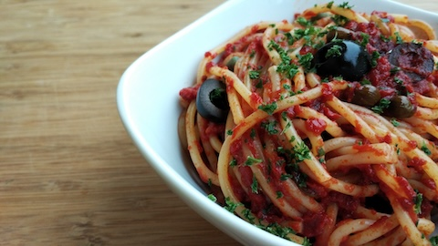

By Popo le Chien
Wikipedia CommonsDescription of Recipe
This recipe was created by my mom by combining her mother's recipe with some other ones she found online. I selected this meal because my mom makes this meal every week and it is our favorite dinner. "Sugar is the secret ingrediant," my mom says with a smile on her face.
| Step | Ingrediant | Quantity | |
| 1 | Dice Onion | 1 Medium Sized Onion | |
| 2 | Mince Galric | 1 Garlic Clove | |
| 3 | Put Meat in a bowl | 1 Ib Beef | |
| 4 | Put Oil in Bowl of Meat | 2 Tablespoons of Olive Oil | |
| 5 | Mix Oil, Meat, Garlic, and Onion in bowl | ||
| 6 | Cook Until the Meat is Browned And Set Aside | ||
| 7 | Put Oregeno Leaves in Bowl | 2 Teaspoons | |
| 8 | Put Bay Leaf with Oregeno | 1 Leaf | |
| 9 | Put Sugar in Bowl | 4 Tablespoons | |
| 10 | Add Canned Tomatoes | 32 oz | |
| 11 | Add Tomato Sauce | 16 oz | |
| 12 | Add Tomato Paste | 8 oz | |
| 13 | Add Coyenne Pepper | 1 Pinch | |
| 14 | Add Salt | 1 and 1/4 Teaspoon | |
| 15 | Mix Set Aside Bowl With New Bowl and Simmer For 35 Minutes | ||
| 16 | Boil Pasta Until Preffered Softness and Mix with Sauce | ||
| Bon Appetit! | |||
Tips and Tricks
- Try with different types of pasta. You may be surprised
- Let it simmer for hours after fully made
- Great for leftovers